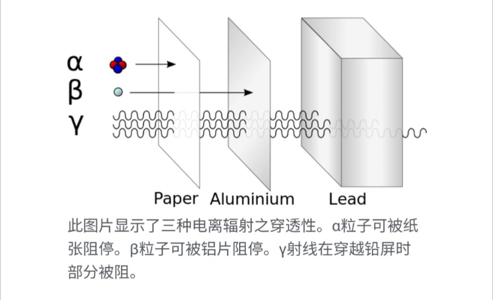
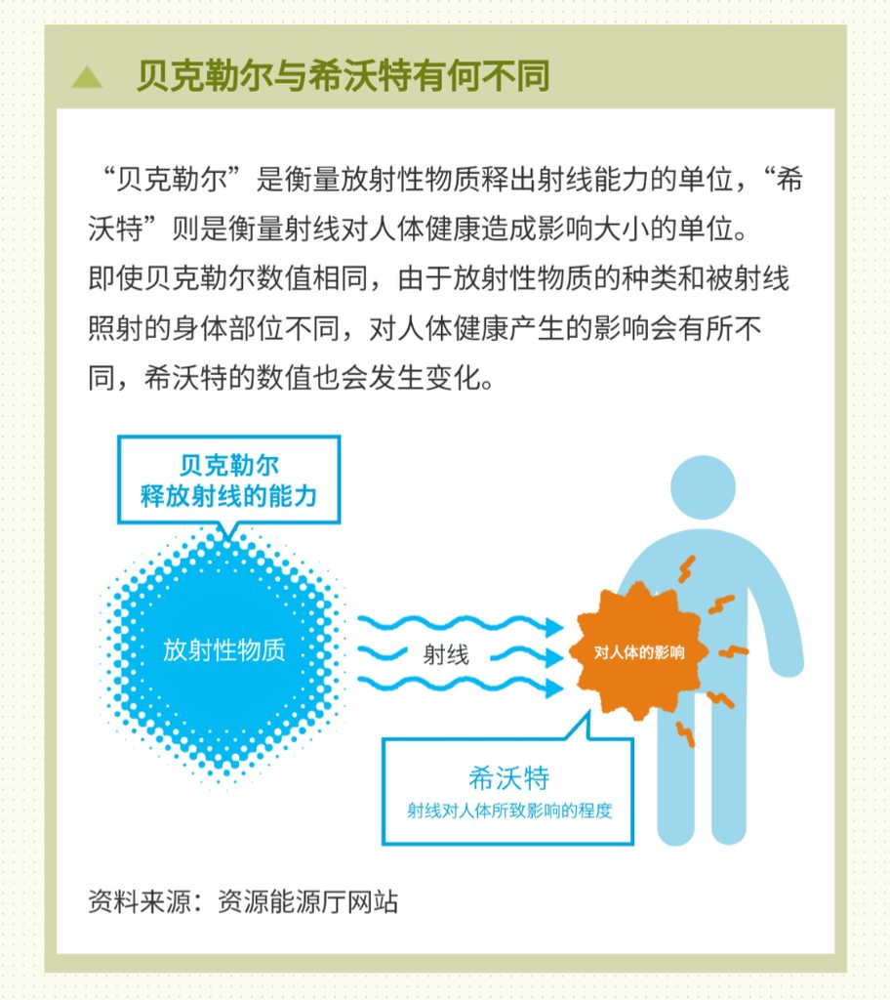
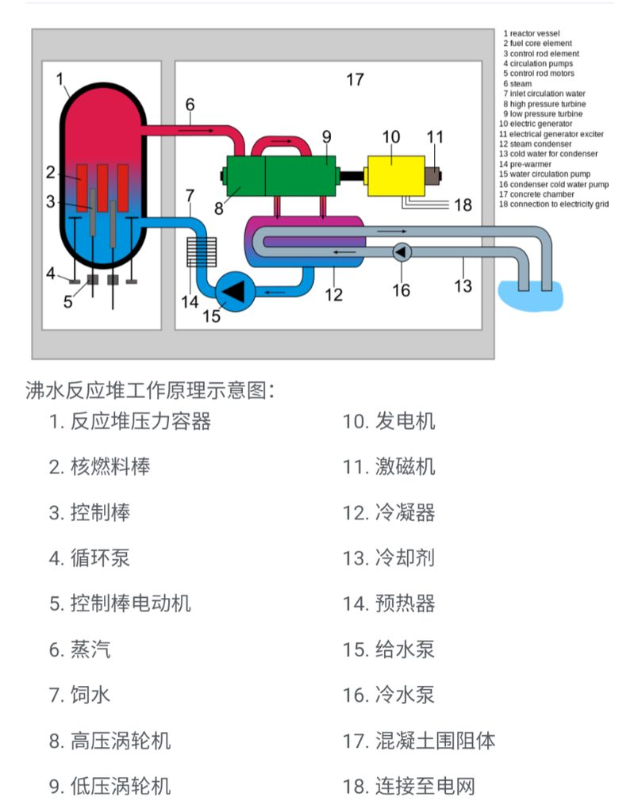
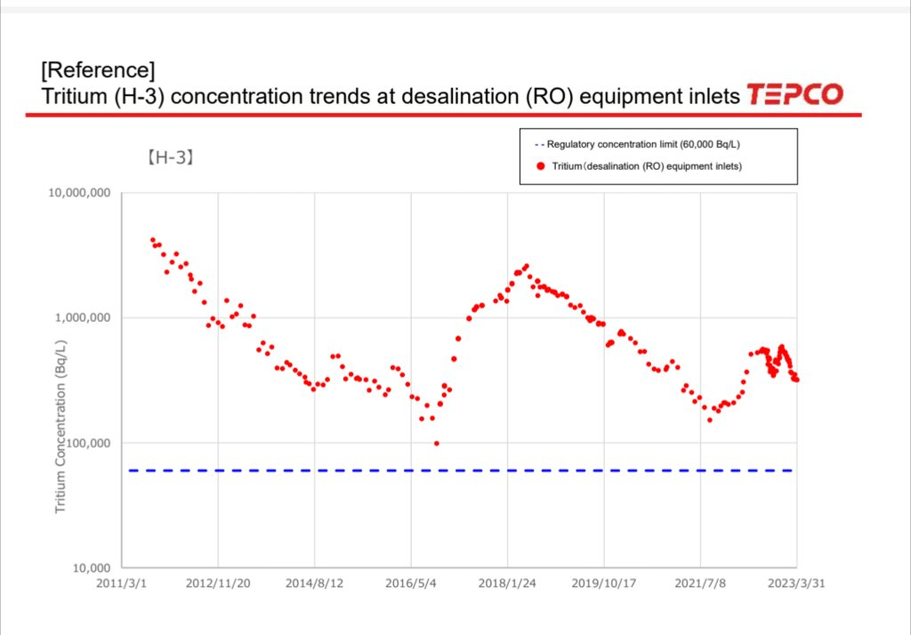
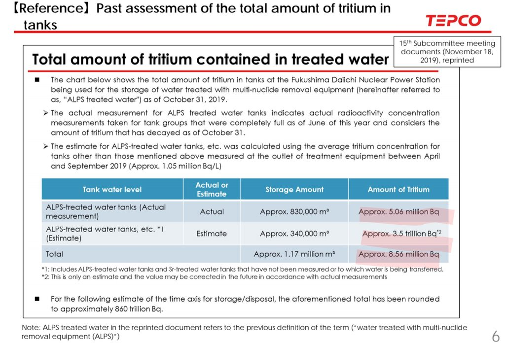

核物理基础知识
辐射种类
核辐射主要分为以下几种类型：
- 阿尔法辐射（Alpha Radiation）：阿尔法辐射由带有2个质子和2个中子的阿尔法粒子组成，即氦核。它的穿透能力较弱，只能在几厘米的空气或几毫米的物体中传播。然而，如果阿尔法辐射进入人体，就会对组织造成严重伤害。
- 贝塔辐射（Beta Radiation）：贝塔辐射由高速电子（β-粒子）或正电子（β+粒子）组成。贝塔粒子比阿尔法粒子穿透能力更强，可以穿过几米的空气和几毫米的物体。当贝塔辐射进入人体时，它可以引起组织损伤，并对细胞和基因造成破坏。
- 伽马辐射（Gamma Radiation）：伽马辐射是高能量电磁波，具有极强的穿透能力。它可以穿透物体和组织，甚至可以穿透几米的混凝土或数厘米的铅。伽马辐射对人体组织有很高的穿透力，因此对人体的辐射危害最大。
- 中子辐射（Neutron Radiation）：中子辐射由中子组成，没有电荷，因此穿透能力非常强。中子辐射可以与原子核相互作用，引起核反应和核裂变，对物质和生物体产生广泛的影响。它对物质的穿透能力取决于中子的能量。
这些核辐射类型在核能产业、医学放射治疗、科学研究和其他领域中普遍存在。

放射性活度单位：贝克勒尔
贝克勒尔（法语：Becquerel，符号为：Bq），简称贝克1 2。是放射性活度的国际单位制导出单位，用于衡量放射性物质或放射源的计量单位3。贝克勒尔的国际单位制量纲为[s-1]，同频率单位赫兹相同，但意义完全不一样。一定量的放射性核素，若每秒有一个原子衰变，其放射性活度即为1贝克，例如，一克的镭-226放射性活度有3.7×10^10Bq。这是个相当庞大的数值，因此常用千贝克（kBq）甚至百万贝克（MBq）来表示3。 放射性射线对人体具有危害，毫无防护下长期接触放射物质，会使健康受到严重损害4。
给予固定质量的放射性物质，其贝克数值会随着时间的演进而改变。因此，对于短寿命同位素，必需标明其放射性衰变率与时间戳在一起，有时候，这衰变率还会调整至某特定日期（过去日期或未来日期）。例如，安全组织时常会标明出一个十日调整数目，即十日后的放射性活度。在这时间间隔内，短寿命同位素的数量可能会大幅降低。
简而言之，贝克表现了放射源在某一时刻的放射性活度。如果放射源不变，由于自然衰变的作用放射性活度会随时间逐渐变小。
受辐射等效生物当量的单位：西弗
希沃特（英语：sievert，符号：Sv；又称西弗，简称希）。是一个用来衡量辐射剂量对生物组织的影响程度的国际单位制导出单位，为受辐射等效生物当量的单位1。
在地球上都存在天然辐射，有些源自地球大气层外界，有些可在土壤、矿石中发现些微的天然放射性核素，而空气及水中亦存在天然放射性氡气，而人体中也含有天然放射性核素钾-40等，因此人类生活随时都会接受到一些辐射2。
如果按照国际放射防护委员会的标准，来自非背景辐射的游离辐射，一般人为造成之辐射年剂量规定是不超过 1毫希沃特（1 mSv/a），换算就是每小时0.1微希沃特（0.1 µSv/h）。放射性职业工作者一年累积全身受职业照射的上限是20 mSv/a（国际放射防护委员会推荐）。但是侦测环境如果超过20微希沃特，就是紧急状况。如果人体瞬间接受辐射量超过250毫希沃特，身体就会造成不可见的伤害，超过2希沃特则有致死的可能，超过6希沃特而未经适当医护，死亡率为百分之百3。
地球上普通人受到的累计辐射平均值为每年2.4毫希沃特（mSv，即2.4 (mSv/a)÷365÷24 = 0.274 (µSv/h)），其中氡为1.2毫希沃特，宇宙射线为0.4毫希沃特，大地本底辐射为0.5毫希沃特，食物中摄入0.3毫希沃特。
西弗
希沃特（英語：sievert，符號：Sv；又称西弗，简称希）。是一个用来衡量輻射劑量对生物组织的影響程度的国际单位制导出单位，为受辐射等效生物当量的单位[1]。
https://zh.wikipedia.org/wiki/西弗
贝克和西弗之间的关系
辐射可以类比于手电筒发出的光，贝克计量的是手电筒的光照强度，西弗计量的是人收到的光的强度。贝克和西弗之间的关系要考虑人接受辐射的具体条件，如果你旁边有一克的镭-226，放射性活度有3.7×10^10Bq，但是你生活在一个屏蔽罩内，那么你接收到的辐射当量就是0，因为辐射没有对你的身体造成影响。
 所以在制定核电站排放污水标准的时候，需要度量的是排放的放射物质的总量，使用的单位是贝克，由于贝克是一个非常小的单位，他代表一秒钟只有一个原子衰变，而水的摩尔质量=18g/mol，水又由三个原子组成，所以6克的水大约就有6.02×10^23个原子。所以贝克在使用的时候比较常用的是更大的单位百万贝克和兆贝克，这里需要特别注意的是兆贝克这个单位比较容易混淆，在港澳台日的常用翻译当中，兆指的是万亿而不是而不是我们翻译当中熟悉的百万。
福岛核污水形成过程

福岛核电站是沸水堆，上图为一个沸水的主要结构，这图中红色部分的液体称为燃料冷却剂，会在核反应堆内部被加热成为蒸汽，同时也会与核燃料进行直接接触，当核电站正常运行的时候这部分水是在一个封闭系统内循环使用，随着反应的进行这部分水的放射物质会积累，所以核电站会定期更换这些水，这个更换周期一般是月份为单位。在核电站正常运行的时候，这部分水被更换出来以后可以进行净化处理以后排放到环境，也可以净化处理以后重新作为冷却水使用。但是在核电站正常运行的时候，这部分的水量应该是非常小的，真正占排放主流的是13号所指的二级冷却水，它和核燃料并不直接接触，理论上不应该含有任何的放射性物质，但实际运行当中有可能会含有，所以这部分水一般会在监测合格的情况下排放。
而福岛核电站当中部分反应堆被炸毁，堆芯出现熔毁，东电直接将海水注入堆芯冷却反应堆，所以形成了现在的100多万吨核废水，这些废水可以简单理解为核燃料棒的洗澡水，就像大家想的那么恐怖。
ALPS （多核素去除系统）运作原理
这种废水里面主要含有62种放射性元素和氚，日本开发了ALPS系统对这些水进行处理，处理结果是讲60多种放射性元素的放射性浓度都降到了放射性废物排放标准以下。但是氚没有办法去除，是否经过这个装置的处理，对氚的含量没有丝毫改变，这个就是为什么要把氚单独拿出来说的原因。
另外这个装置的处理原理主要是通过化学反应和物理吸附等非常成熟的核废物处理技术，并不是日本在大地震发生以后迅速发明了这么多新东西，搞出了这一套废水处理系统。
日本强调了处理结果当中60多种放射性物质每一种的告示浓度比都低于1（告示浓度比指的是石基的放射性浓度和标准浓度的比例，低于1代表达标），这样的计算机制会有一个漏洞，如果你的放射性物质种类足够多，那这样排放出来的水的危害还是很大的，所以在报告当中也提到了所有60多种放射性物质的总和告示浓度比也是低于一的。
但是这种计算不包括氚，因为目前的处理机制无法处理氚，无法处理的主要原因是目前世界上并没有可以达到实际应用水平的把氚提取出来的可靠技术，因为氚是氢的同位素，在水当中以水分子的形式存在，实际上和普通水分子的物理化学性质基本没有区别。
下面这个官方文件公布了处理前后的核废水当中每一种放射性元素的放射性浓度，在处理之后除了氚之外所有元素都达到了标准值以下，也就是说如果没有氚，这些处理过后的水完全可以正常排放到环境当中（虽然浓度达标，但是也要控制总量）。
通过下面图表可以看到，氚的标准浓度是6万贝克每升，而这些废水当中的浓度却达到了10万到1,000万之间最坏的情况超出接近百倍。 
Info
这个文件详细介绍了氚的性质，其中有一个重要的性质，就是氚的衰变本身只会产生贝塔射线（电子流），它的穿透性无法穿过一层金属，所以不存在体外的伤害，也就是你端着一杯超标的含氚水并不会对你造成任何的辐射伤害，只有将它喝进去才会造成伤害。
因为氚实在是无法处理，而伤害性又较低，所以选择了用水稀释以后排放，这个稀释行为并不是某些自媒体解释的换汤不换药，浓度高和浓度低是完全不同的概念，假设政府允许我每年排放一吨盐到大海里，我将它兑成生理盐水，扔在大海里，这个是对大海毫无伤害的，但我如果制造一块巨大的盐让他在海里飘来飘去，他每飘到一个地方就会把周围的鱼都咸死，这样是会有非常大的伤害的。
ALPS的原理是什么？ - 知乎
我们知道，日本福岛核电站事故后，为了处理核废水建立了ALPS系统。查了很多资料，包括东电提供的和IAEA提…
https://www.zhihu.com/question/615594878
排放计划定量分析
下面这个文档当中计算目前所有核废水当中的氚的总量，最重要的数据如下图，估算目前。平均的氚浓度为620000贝克每升，超过标准值10倍以上，总共的放射性活度为780trillion （10^12，港澳台日翻译为兆）贝克，大约相当于15克纯的氚水。
日本目前的排放计划是每年22trillion 贝克，大约三四十年可以排完，因为这个储量是动态的，每一天会有新的含氚废水产生，同时氚本身也会衰变，氚的半衰期是13年，真的等到40年以后现存的氚会衰变成为现在的八分之一, 所以这个三四十年的排放计划平均下来是可以满足每年的排放标准的。 那这个标准到底是高还是低，我们可以参考其他核电站的正常运转时的排放标准，根据中国政府的官方文件，大亚湾核电站的液态氚年排放上限为225trillion 贝克，当然，目前大亚湾核电站并没有按照最高标准排放：
关于大亚湾核电基地六台机组放射性流出物年排放量限值的批复
- 根据与大亚没核电厂合营的香港核电投资公司数据显示，过去十年，大亚湾核电站的液态氚排放量平均为上限的20%，即是约49.5兆贝克。(单位是港澳台翻译, 相当于trillion Bq)
所以每年排放22trillion贝克这个标准只要能够满足的话，实际上它的排放和正常运转的核电站是差不多的。
这里必须要严重吐槽一下东电20210427这个文件，这个文件当中引用2019年的一部分实测数据和估计数据，在估计数据当中，83万立方米的水只含5.6million 贝克，但是看到后面的汇总数据，可以看到他是把单位trillion错写成了million， 同时下面给出了注解，这个值在后来已经被修正成了860trillion贝克。
这里可以反映出东电的测量误差并不小，同时工作并不严谨，这是一个非常大的风险。 
下面的网页当中有非常详细的一些争议问题的回应，比如说为什么不把废水采用大气排放或者地下储存/原地储存等其他方式处理。
处理水相关Q＆A（最新版）
虽然说了很多，但是我认为最关键的问题是两个，第1个就是为什么必须要处理这些水，而不是放在那里不动? 最主要原因是，目前场地已经无法容纳更多废水，但是冷却核反应堆的工作仍在进行，还会源源不断的产生更多废水，如果没有一个良性的处理机制，总有一天这些水无法再储藏，就只能停止冷却，等待核燃料发生更严重的泄漏。
第2个就是为什么排进海里？我想这其中最重要的就是经济原因，排进海里是最省钱的方案。但这个方案已经受到了国际原子能专家的评审，同时后续所有的排放过程都会受到国际原子能机构的监督，我想应该是可以接受的。
风险
东京电力公司完全有动机隐瞒实际情况，超量超标排放核污水，应该有非常严苛的标准关注和监督他的排放情况。
Info
Q＆A | 東京電力
Info
个人感受
我们是否应该为防辐射做准备？
完全不需要。
如果日本在保持公开透明的情况下排放核废水，按照现在的分析，可以看到现在的排放是不具备非常大的危险性的，他实际上只相当于一座正常运转的核电站产生的核废物排放（理想情况，实际情况可能会比这个差一点点，但不会有非常大的数量级的差异）。
同时从社会反应来讲，这一次对日本的仇恨和恐慌情绪更多是一种政治立场问题，而不是科学问题。这个核废水排放如果真的对中国人有很大的伤害，那最先获得这个消息的人就不会是最底层的人。就好像新冠肺炎初期，传染病的消息首先是在中产阶级的医生圈子里面流通，然后被官僚阶级知道了之后把中产阶级抓了，并且发表官方消息进行否认，最后才是底层人民知道有一个有害的病毒正在传播。
而这次的核废水事件，最先知道这个信息并且产生极为强大的愤怒情绪的是广大的底层人民，不像是真正有害的样子。
我们应当以何种态度对待福岛核事故？
我认为应当保有人道主义关怀，就像我们曾经的国务院总理温家宝亲自前往福岛进行慰问并品尝当地的瓜果蔬菜一样，因为这一场堪比切尔诺贝利的核事故与切尔诺贝利的最大区别就是它是一场完全由天灾导致的灾难。
当然东京电力公司在事故以后有种种的不恰当行为，为了经济利益，而选择将核废水处理以后排入大海，似乎有一些自私自利。但是如果你不允许他选择更经济的方法去处理，而是强行要求他以极高的经济成本原地存储这些核废水，那最终的结果很可能就是他偷偷摸摸的将没有处理过的废水排入海中，最后推出一个替死鬼自杀谢罪来缓解沉重的经济负担。
目前的处理后排放的方案，在经过稀释以后包括氚在内所有的放射性物质都是符合标准的，通过这样良性的循环，东京电力公司才有可能完成接下来持续冷却核反应堆，移除反应堆内部核燃料，将所有核反应堆退役的工作。
我们是否应该支持核能的发展？
非常应该。
本次针对于日本的核废水排放事件的大量错误宣传，引起了一定程度的恐慌，让很多人都对核电产生了恐惧情绪。中国拥有非常完善的核工业体系，有十几座核电站，相信在未来还会建设更多的核电站。而这样的复杂工程，面对着各种各样的威胁，无论是怎样的制度，都不能保证100%不出现事故，随着核工业的发展，核电站的增多，核设施运行时间的增加，事故几乎不可避免，而如何正确认识核事故和保护自己? 需要政府向人民群众普及正确的核物理知识。
核能是一种清洁能源，也是属于未来时代的主要能源，如果因为一些事故就停止和减缓发展核能，未来人类社会因为争夺能源而发生的战争可能会害得更多的人被直接屠杀。